| 日付 | 2018年12月2日（日） |
|---|---|
| 山域 | 三浦半島 |
| メンバー | グループ（男5女6子供9） |
| 山行形態 | 子連れ日帰り |
| アクセス | 電車 |
| ルート (Map) | 神武寺駅 (9:20) - (9:48) 登山口 - (10:13) 神武寺 - (11:06) 鷹取山 (12:58) - (13:04) 魔崖仏 - (13:19) 下山地点 - (14:18) 追浜駅 |
本日は久々のグループ登山。山友達と忘年山行に出かける。
今回は子供の数がさらに増えてなんと9人。
まるで遠足のような大人数登山になる。
神武寺駅に集合。標高10m。
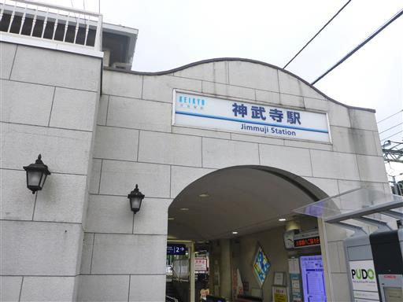
しばらく車道を歩くと右折する標識が出てくる。
子供がたくさんいると山道よりも車道の方が怖い。
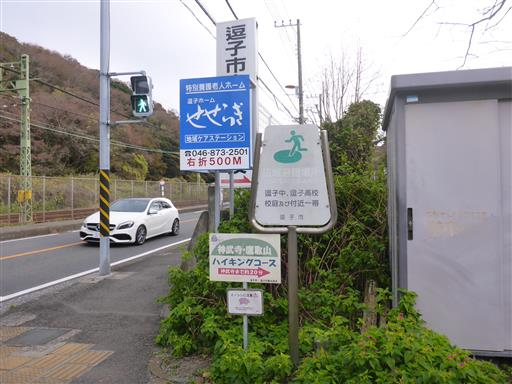
電話ボックスで遊び始める。
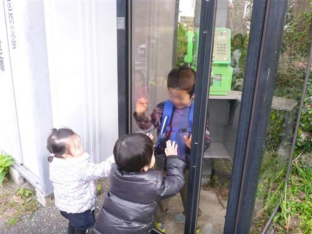
ここからは車通りが少なく比較的安全な道になるので、子供達を自由に歩かせる。
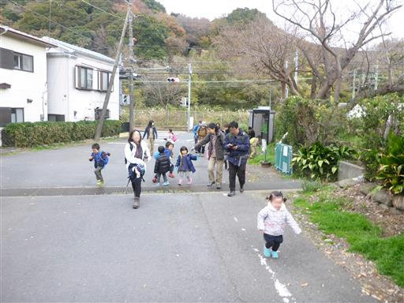
穴を眺める。
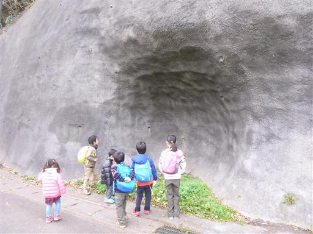
イチョウの黄葉が美しい。
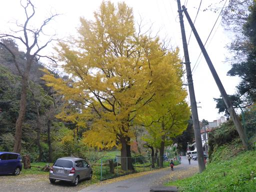
ドラえもんやトトロなど子供に人気のありそうなキャラクターが並んでいる。
でも子供達は一番左の人形に集まっている。
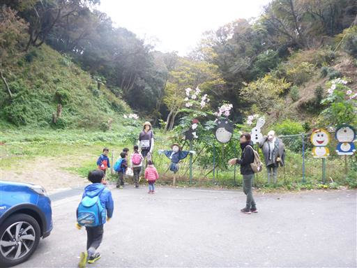
なぜ大坂なおみ？なぜJK？そしてこの人形は何？
全てが謎。そして少々不気味だ。
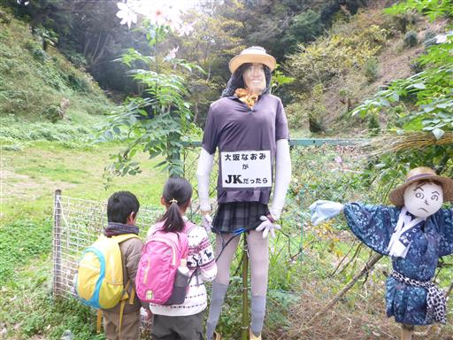
こちらはスパイダーマン。
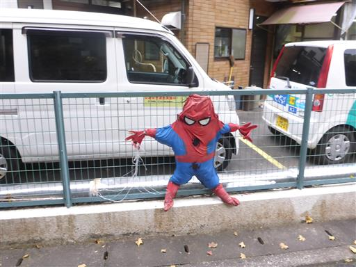
ニワトリ。かなり大きく迫力がある。
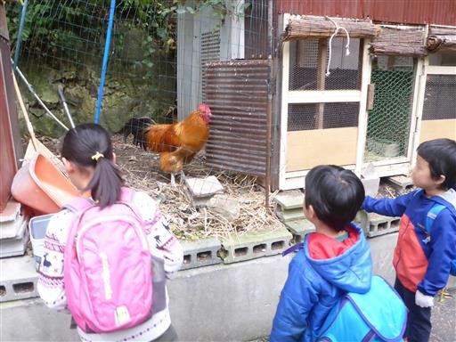
石の壁に段があったので子供達が登り出す。一人が登ると全員が登る。
今日は時間がたっぷりあるので、子供達の自由にさせておく。
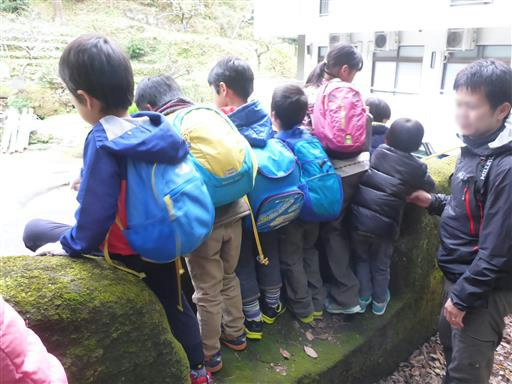
車道が終わり、ようやく登山道らしくなってくる。
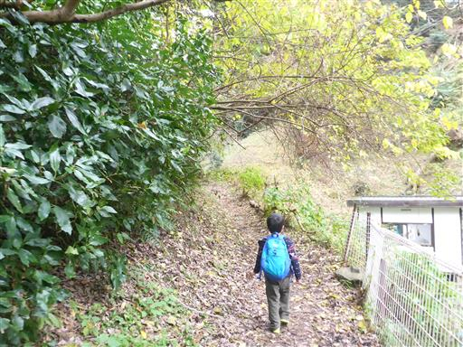
周囲は深い森になる。
大きい子はどんどん先に行ってしまうので、追いかけて所々で後続を待たせる。
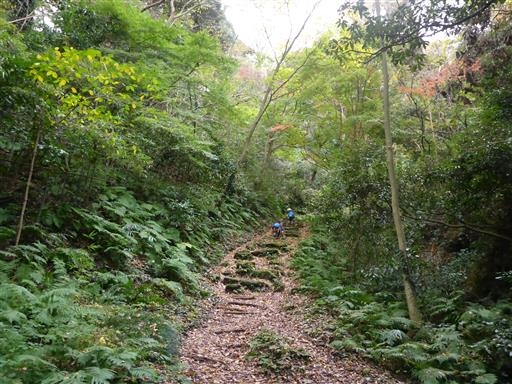
しばらく歩くと神武寺の総門が現れる。ここからは神武寺の境内だ。
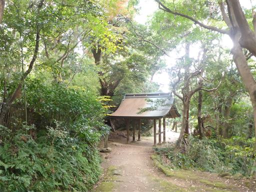
鐘楼。鐘を突いてみたかったが、禁止と書かれている。
もっとも一度突くと子供達がやって来て収拾がつかなさそうだ。
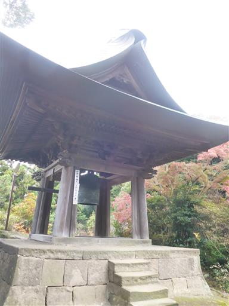
六地蔵。
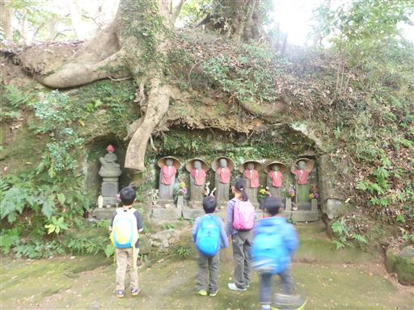
楼門を潜る。
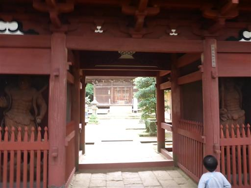
薬師堂に到着。
静かな雰囲気の場所なのだが、子供達が騒いで迷惑なため、
早々に切り上げて先に進む。
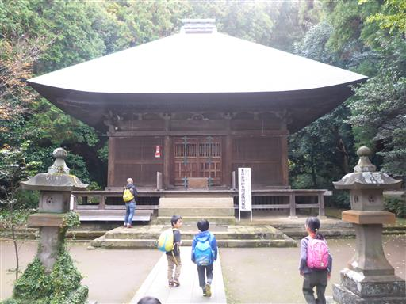
またまた先行組はさっさと先に進んでいく。
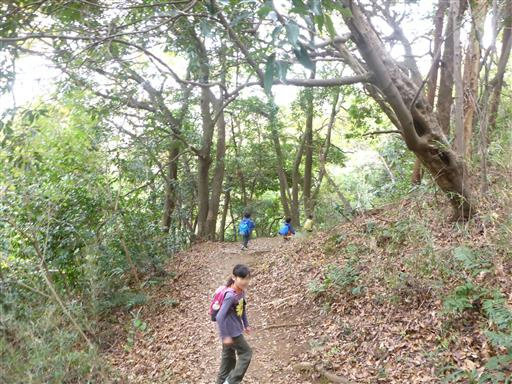
途中で展望が広がる。今日の天気はぱっとしない。
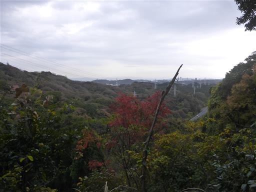
大きな岩の上で一休みして後続を待つ。

鎖場を乗り越える。簡単な鎖場だが、アスレチック感覚で楽しんで登れる。
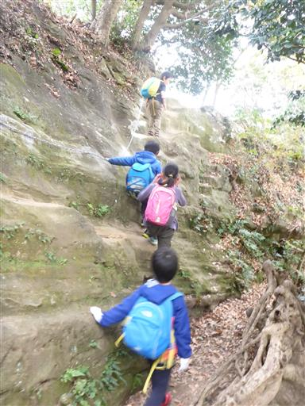
再び展望が広がる。
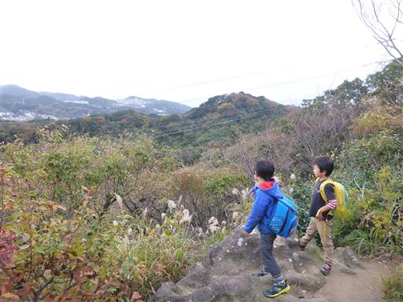
先の方に見えるのは二子山だろうか？
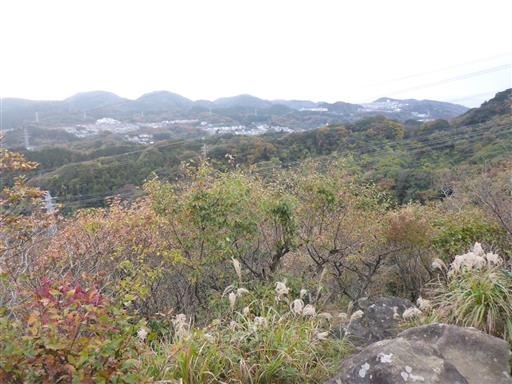
木が倒れて崖に落っこちている。凄まじい景色だ。
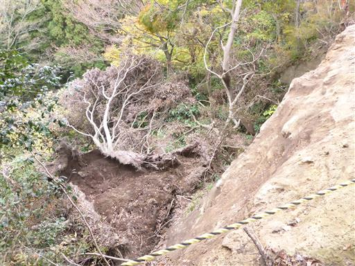
山頂直下の広場に到着。
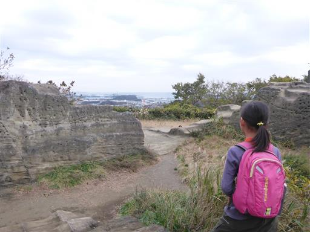
ここはロッククライミングの練習場として名高く、多くの人が壁を登っている。
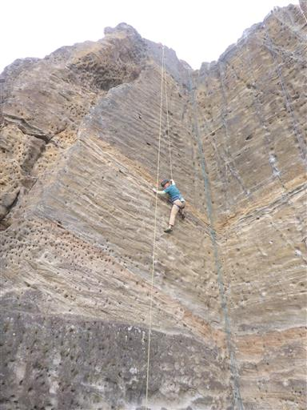
どの壁もでこぼこだ。試しに3m程の壁を登ってみる。
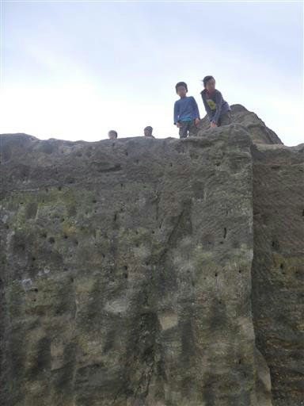
山頂目指して階段を登る。最後の階段が一番きつい。
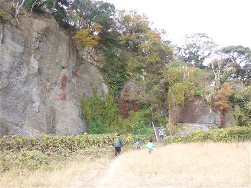
山頂は展望台になっている。小さな山頂標識が取り付けられている。
10年前に来た時と字が違うので、山頂標識は代替えされているようだ。
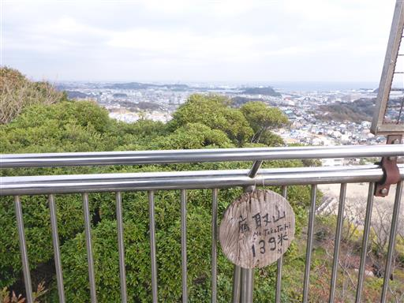
山頂からの景色。残念ながら曇っているが、四囲の眺望が得られる。
比較的近くに海が見える。
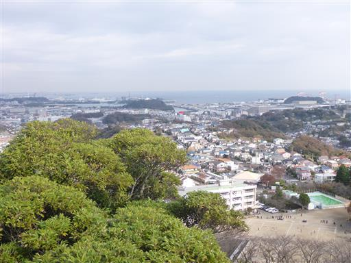
眼下には先ほどの広場が見える。
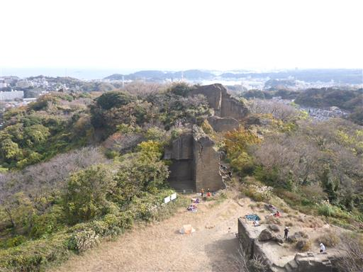
トイレの近くにある岩場に移動して昼食タイム。
少々寒いがまったりと時を過ごす。
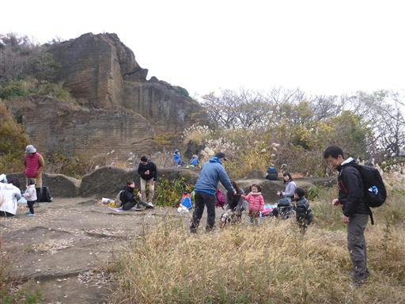
子供達は近くの岩に移動したり、周囲を走り回ったりして遊んでいる。
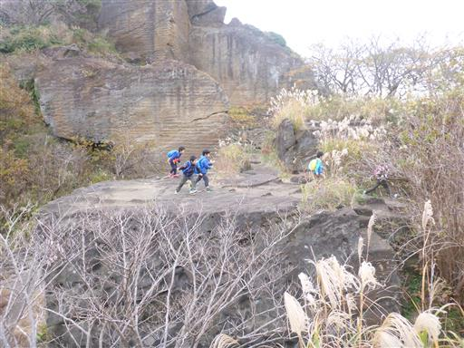
天を突く岩峰。不思議な光景だ。
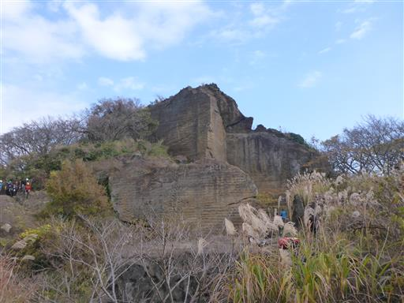
十分遊んだら、荷物をまとめて下山を開始する。
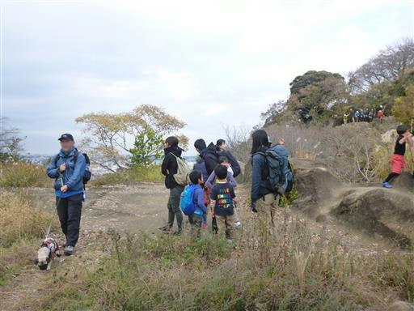
下山道は登りとは道を変えて追浜駅に向かう。
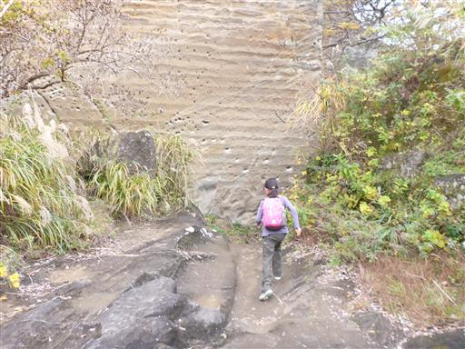
岩に大きな穴が開いている。鋸山と似た風景だ。
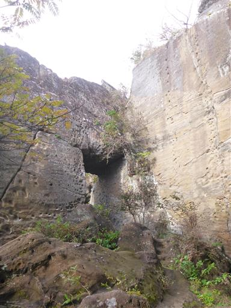
巨大な魔崖仏。
そこそこ迫力があると思うが、子供達はわりと無関心だ。
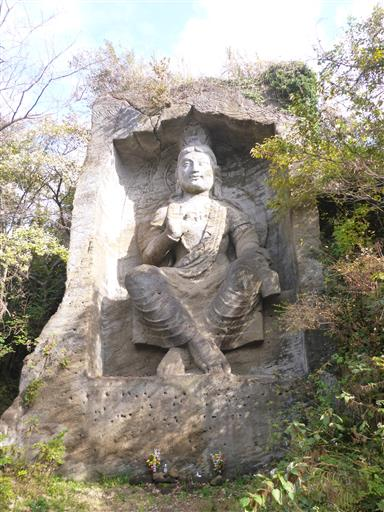
巨大な岩と岩の隙間を抜けていく。
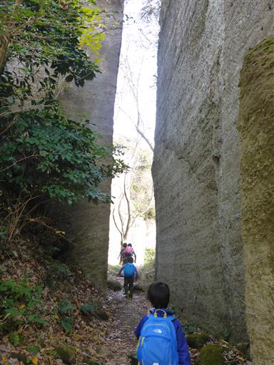
岩場地帯を抜け、視界が広がる。
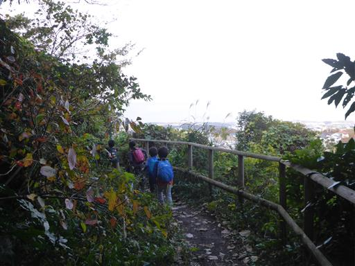
最後に長い階段を下ると下山だ。
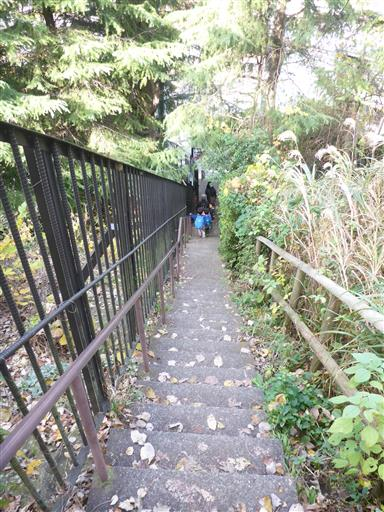
下山地点の店に動く人形が飾られている。
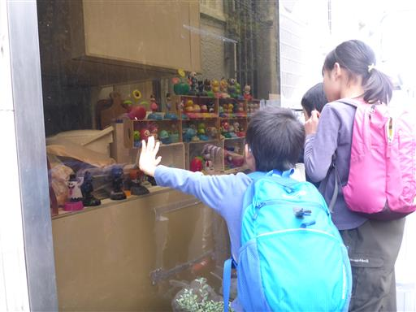
後続が到着して子供達が集まるとこうなる。
全員は乗れないので押し合いへし合いだ。
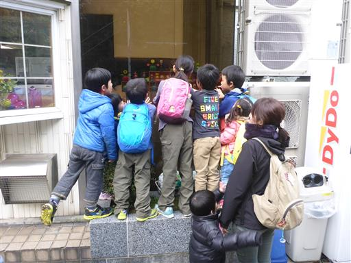
最後は1.5kmほど車道を歩いて追浜駅に到着する。標高10m。
かなりの大人数登山となったが、緑濃い道や鎖場、山頂付近の奇岩、山頂からの展望
神武寺に魔崖仏に大坂なおみと面白い登山道で、皆に楽しんでもらえたようで良かった。
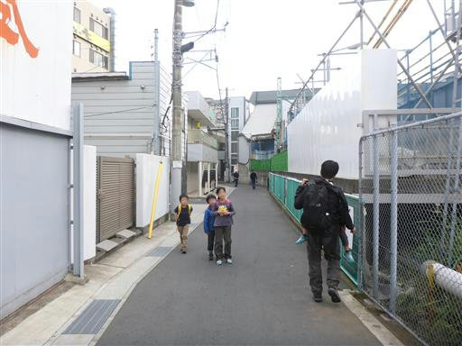